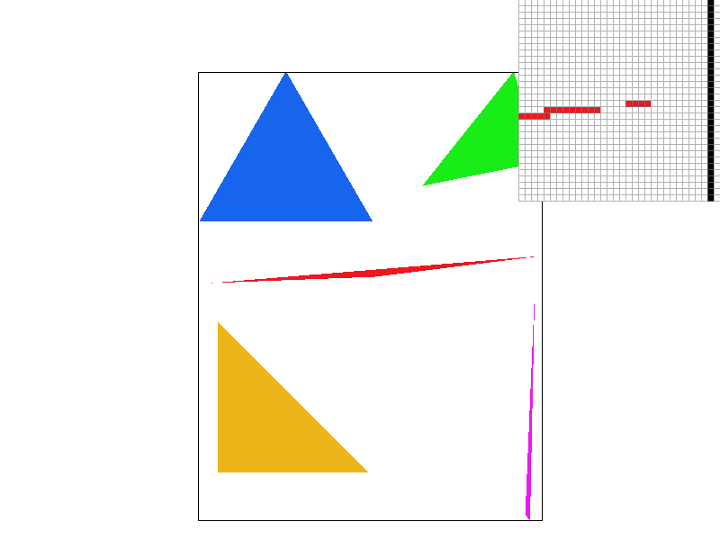
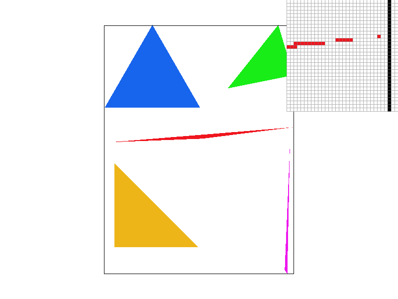
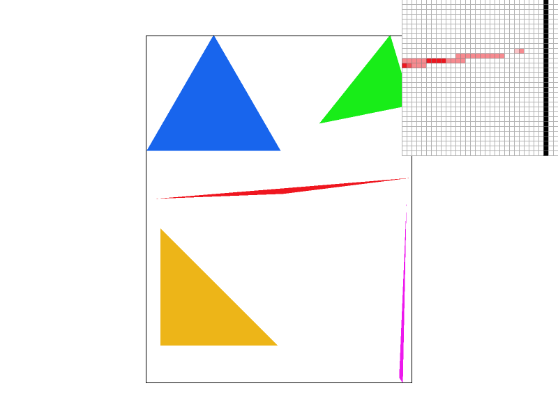
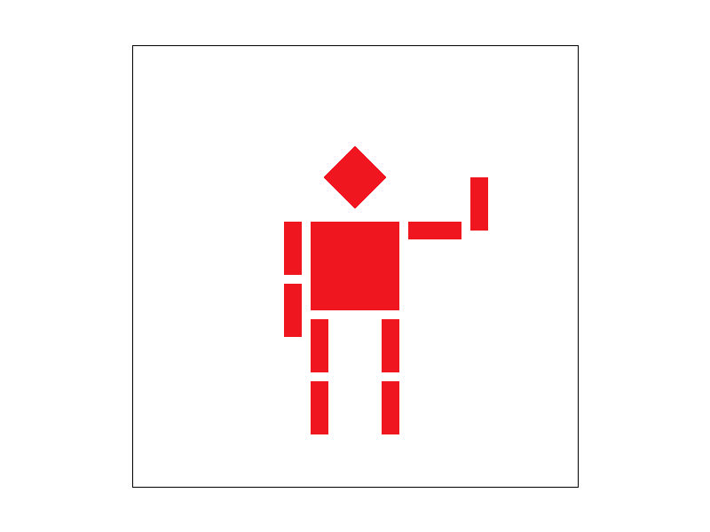
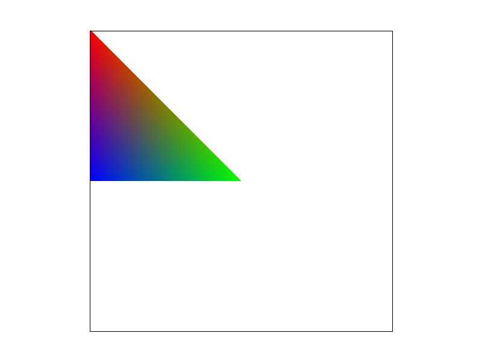
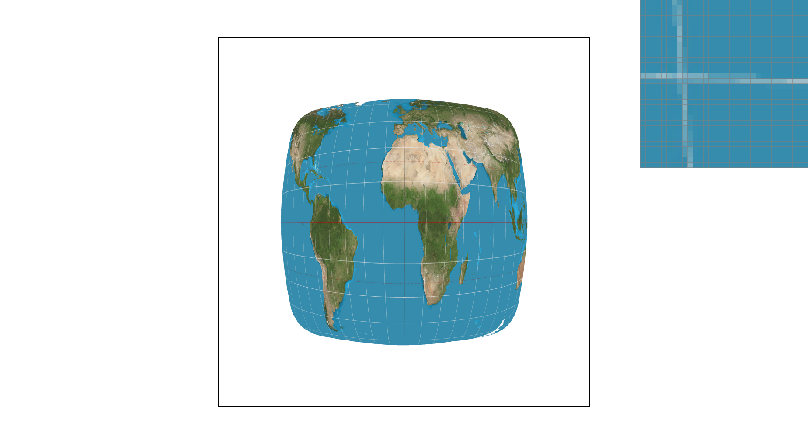
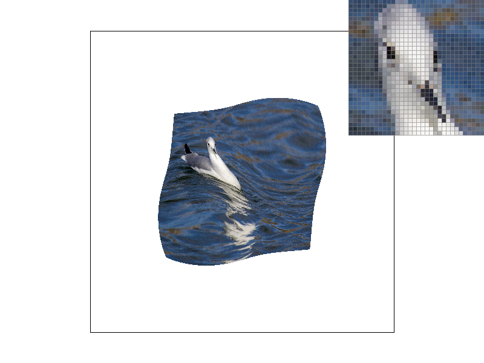
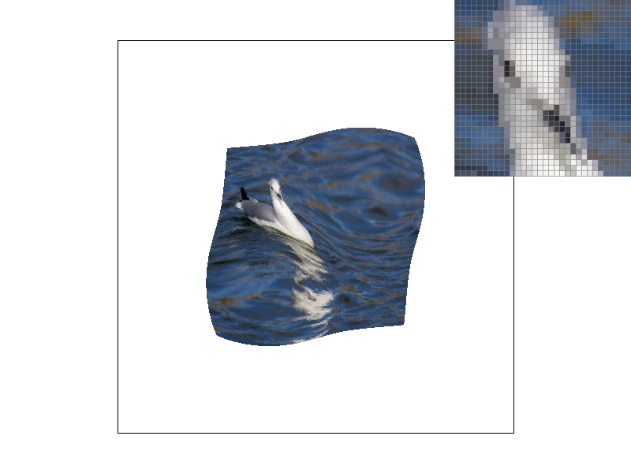
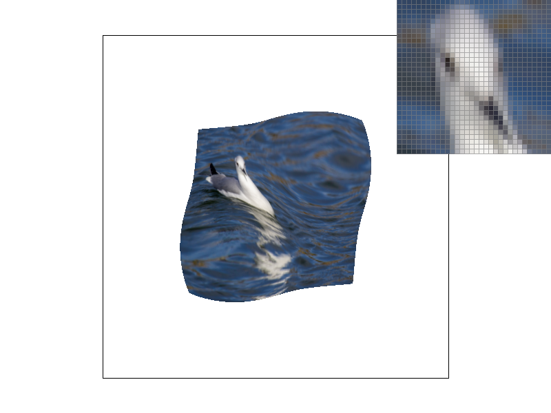

In this project, we developed our own rasterizer which takes in SVG files and is able to draw images using combinations of points, lines, triangles, and textures. We also observed various methods of improving our renders, particularly via anti-aliasing.
We first implemented rasterization of triangles on the screen using point and line tests. To make our triangle edges more smooth and avoid jaggies, we implemented supersampling. We extended our methods of anti-aliasing to pixel sampling and level sampling applied to textures. Throughout the project, we used barycentric coordinates to interpolate scalar or vector values within triangles. This allowed us to draw smooth color gradients across triangles and to project texture maps onto polygons. Finally, our code also supported transforming polygons via rotation, translation, and scaling.
We implemented the rasterize_triangle function in rasterizer.cpp to take a triangle and fill it in using a given color. To do this, we made use of the three line point-in-triangle test discussed in lecture 2. In order to make our operation orientation-indepedent, we used the logic that a point within a triangle will be on the same side of all three lines, while a point outside the triangle will be on different sides for at least one of the lines. Then we checked this property by evaluating the products L0 * L1, L1 * L2, and L0 * L2 and concluding that a point lies within the triangle if and only if all these values are positive.
Furthermore, we can conclude that our implementation is at least as efficient as sampling within the bounding box of the triangle because we check only pixels within this bounding box.

We observe aliasing in the corner of the triangle, since the skinny side of the triangle is too high frequency to capture at this sampling rate. However, we will resolve this in the next section.
We chose to make the sample_buffer size width * height * sample_rate in order to effectively supersample each pixel. Then, when drawing to the frame_buffer of size width * height, we averaged the sample_rate pixels in the sample_buffer which correspond to each pixel.
To anti-alias triangles, for a triangle with vertices v1, v2, v3 in screen space, we filled in the sample_buffer with a triangle with vertices (v1 * sqrt(sample_rate)), (v2 * sqrt(sample_rate)), (v3 * sqrt(sample_rate)) in sample space before downscaling as described above.
Finally, we chose not to anti-alias points or lines, so to fill in a single pixel of a line/point we simply filled in the sample_rate pixels in the sample space that corresponded to the given pixel in the screen space.
|

|

|
|
We see a stark contrast between sampling at 1 sample/pixel and sampling at 4 samples or 16 samples per pixel. The sharp corner which was cut off at 1 sample/pixel becomes mostly continuous at 4 samples and entirely continuous at 16 samples per pixel. Furthermore, a broad look at each image shows that the presence of jaggies is almost entirely removed as we increase the sample rate. Clearly, this is a powerful technique which enables us to improve the quality of our images, at the cost of increasing our computing time and memory usage.
We ran into a problem with this section, where instead of seeing a single image when we supersampled, we observed 4 different copies at various offsets from one another when using a sample rate of 4. However, we eventually determined that this was due to not multiplying the height and width by the square root of the sample rate when looking up a pixel value in the sample buffer which corresponds to the screen.
We implemented the translate, rotate, and scale operations on points in homogeneous coordinates using the 3x3 matrices specified in lecture 4.

Here, we wanted to make a robot which was waving to us. Originally, cubeman was holding his arms out in a T pose. We updated the SVG file by making one of his arms into an L shape to signify waving, and moving the other arm down to his side (since it's very strange to be holding out the other arms when waving).
Within a triangle, Barycentric coordinates express the proportional distance of a point between each triangle vertex and its opposing side. These coordinates sum to 1 and provide a smoothly varying metric of how close points are to a triangle's vertices. As a result, they are nice scale factors to use when interpolating sampled values at triangle vertices.
Using the formulas given in lecture, we wrote a function to calculate the barycentric coordinates, which we reused later in the assignment for texture mapping and level sampling. Then we used the barycentric coordinates to smoothly interpolate between the red, green, and blue vertices of the triangle shown below.
We originally forgot to use the center of the pixel when calculating the barcyentric coordinates but implementation otherwise went smoothly.

Pixel sampling refers to methods of interpolating intermediate values via sampled pixel locations. To perform texture mapping, we first used an interpolation scheme in rasterizer.cpp based on barycentric coordinates to calculate the normalized coordinates of a pixel within a triangle. Then in texture.cpp, we scaled these coordinates up to the size of the texture mipmap and interpolated values of nearby texels to choose a reasonable color value for our pixel.
For nearest pixel sampling, after scaling the coordinates up to the size of the texture mipmap, we simply chose the color of the nearest texel in the mipmap.
For bilinear pixel sampling, after scaling the coordinates, we calculated the four closest texels to our scaled coordinates. Then we linearly interpolated the colors of the lower two, the upper two, and finally interpolated these resulting color values.
We were careful to avoid scaling coordinates beyond the boundaries of the mipmap and overall, implementation for this section went smoothly.
|
|

|
|
|
|
In the left images with 1 sample/pixel, nearest sampling results in lines that are jagged and even have some large gaps. In this regime, bilinear sampling manages to form smooth lines despite the low sampling rate and clearly outperforms nearest sampling. However, in the images on the right, the higher sampling rate of 16 samples/pixel allows nearest sampling to form smooth lines as well. Here although bilinear sampling does result in slightly smoother lines, the difference is nearly indistinguishable.
This comparison shows that either bilinear sampling or naively increasing sampling rate can prevent aliasing. However, in practice we would likely prefer bilinear sampling since higher sampling rates increase computational cost.
Level sampling refers to methods of selecting a texture mipmap level based on the size of the object that we are mapping a texture onto.
We first calculated how much tiny shifts in x and y coordinates affected the corresponding barycentric coordinates, effectively estimating gradients of u and v. We found the norm of the larger gradient and took the log of this norm as a continuous estimate of the appropriate mipmap level, since it is a measure of how much our transformation changes scale.
Using this continuous level estimate, we implemented two methods of level sampling: nearest and bilinear sampling. Nearest level sampling simply performs texture sampling from the closest mipmap level. Similar to bilinear pixel sampling, bilinear level sampling performs texture sampling on both the nearest two mipmap levels and then interpolates the resulting colors based on the continuous level estimate.
We ran into some unpleasant bugs due to forgetting to clamp mipmap levels (e.g. for the continuous level estimate and for levels used by bilinear level sampling) but aside from these issues implementation went smoothly.
Comparing the three anti-aliasing techhniques we have discussed, increasing sampling rate is by far the most resource intensive, requiring multiplicative increases in runtime and memory usage. However, this extra cost comes with substantial anti-aliasing benefits across all pixels in the image and can be quite convenient to implement if you already have the resources necessary.
Pixel sampling increases memory usage and runtime moderately due to the extra computations required. It also provides significant anti-aliasing benefits for many image pixels and is easy to implement but can run at a fraction of the cost of supersampling.
Level sampling incurs moderate extra memory due to the need for extra mipmaps and incurs some additional runtime as well to generate and select the appropriate mipmap. It can be less broadly applicable than supersampling or pixel sampling since images may not require different texture sizes. However, when varying texture sizes come into play, level sampling can produce substantial anti-aliasing benefits without much additional cost.
|

|
|
|

|
|
|
|

|
If you are not participating in the optional art competition, don't worry about this section!